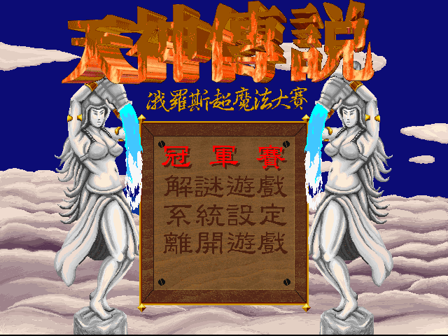
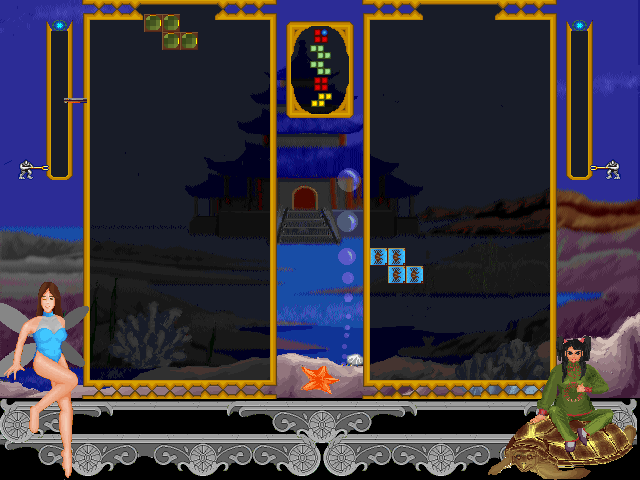

名稱：天神傳說 (Magic Tetris，中文版) 簡介：泰騰 1996年出品的俄羅斯方塊遊戲 [待補]。

備註：本版缺音軌，執行後無背景音樂 保護：光碟。遊戲會存取檔案MSCD001進行光碟檢驗，在DosBox上可能會有相容性問題而無法 檢驗成功，請使用光碟上的MTCD3.EXE（不檢查光碟）取代原本安裝目錄裡的MTCD.EXE。 遊戲程式另外會檢驗音軌資訊是否正確，可進行下列修改以略過： MTCD3.EXE, MTCD.EXE 85 C0 74 0A 6A 00 -- -- EB -- -- -- 備註：光碟內的所有檔案必須在MT目錄裡，否則會無法安裝，也無法成功執行。